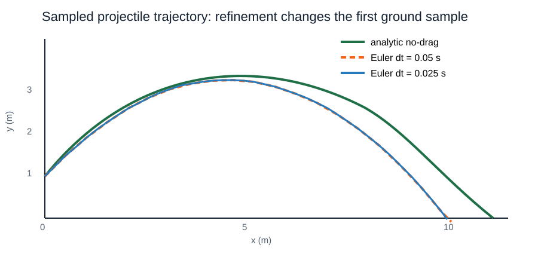

כאשר חישוב אחד הופך לרבים, נחזור במכוון, נשמור היסטוריות תואמות ונבדוק מה השתנה בצעד הזמן.
מחשב אינו רואה עקומה רציפה. הוא מעדכן ושומר דגימות בזמנים רבים עד לאירוע עצירה מוגדר.
לולאה מחליפה חישובים מועתקים ומציגה את כלל העדכון, המונה ותנאי העצירה.
for ראשונההטווח 1:3 כולל את שני קצותיו; לפני ההרצה נרשום אילו ערכים יקבל n.
for n in 1:3
println(n)
end1
2
3let total = 0
for n in 1:4
total = total + n
println("n = $n, total = $total")
end
endn = 1, total = 1
n = 2, total = 3
n = 3, total = 6
n = 4, total = 10for time in 0:2:10 # s
println("time = $time s")
endtime = 0 s
time = 2 s
time = 4 s
time = 6 s
time = 8 s
time = 10 sa:step:b מתקדם בצעד שנקבע בלי לעבור את הגבול; הקצה נכלל רק אם סדרת הצעדים מגיעה אליו. השילוב $(time) מכניס את הערך הנוכחי למחרוזת.
height = [1.0, 1.5, 2.0, 2.5] # m
println(length(height))
println(height[1], ", ", height[end])
println(height[2:3])4
1.0, 2.5
[1.5, 2.0]end הוא האינדקס האחרון; חיתוך בוחר חלק. כאן הפרוסה height[2:3] היא העתק.
part = height[2:3]
part[1] = 99.0
println(height)
for i in eachindex(height)
println("sample $i: $(height[i]) m")
end[1.0, 1.5, 2.0, 2.5]
sample 1: 1.0 m
sample 2: 1.5 m
sample 3: 2.0 m
sample 4: 2.5 meachindex מתאים כאשר נדרשים מיקום, וקטורים תואמים או הצבה לפי אינדקס. שינוי part[1] אינו משנה את height, כי פרוסה היא העתק.
כאשר רק הערכים חשובים, איטרציה ישירה for value in height ברורה יותר. נשתמש בה כשלאינדקס אין משמעות.
עבור כמה וקטורים מתואמים נוודא תחילה שאורכיהם שווים, ואז נשתמש באותו אינדקס.
squares = Int[]
for n in 1:4
push!(squares, n^2)
end
println(squares)[1, 4, 9, 16]let result = ""
for character in "orbit"
result = string(character, result)
end
println(result)
endtibroInt[] יוצר וקטור שלמים ריק, ו־push! מוסיפה לסופו ומשנה אותו. המעבר על תווים קצר ואינו מניח דבר על מיקומם בזיכרון.
using Statistics
measurements = [1.0, 2.0, 3.0] # m
println(mean(measurements))
println(std(measurements))2.0
1.0Statistics הוא מודול מהספרייה התקנית. ברירת המחדל של std משתמשת במכנה n−1, ומסלול אינו בהכרח מדידות חוזרות בלתי תלויות. הגדרת פונקציות שייכת לשבוע 5.
whilefor n in 1:10
if n^2 >= 20
println("first square at least 20 is $(n^2)")
break
end
endfirst square at least 20 is 25let count = 1
while count <= 3
println(count)
count = count + 1
end
end1
2
3break יוצאת מיד מהלולאה הקרובה; while בודק את התנאי לפני כל חזרה, ולכן ייתכן שהגוף לא יתבצע כלל.
ל־Δt קטן: xₙ₊₁=xₙ+vₓ,ₙΔt, yₙ₊₁=yₙ+vᵧ,ₙΔt.
ללא גרר, g אחיד, +x אופקי ו־+y למעלה: vₓ,ₙ₊₁=vₓ,ₙ, vᵧ,ₙ₊₁=vᵧ,ₙ−gΔt.
מעדכנים מקום עם המהירות הישנה ורק אז מהירות: זו מוסכמת אוילר של השיעור.
using Plots
g = 9.81 # m/s^2
dt = 0.05 # s
t = [0.0] # s
x = [0.0] # m
y = [1.0] # m
vx = [10.0 * cosd(45.0)] # m/s
vy = [10.0 * sind(45.0)] # m/s
while y[end] > 0.0
push!(t, t[end] + dt)
push!(x, x[end] + vx[end] * dt)
push!(y, y[end] + vy[end] * dt)
push!(vx, vx[end])
push!(vy, vy[end] - g * dt)
end
trajectory = plot(x, y; xlabel="x (m)", ylabel="y (m)",
label="Euler samples")
display(trajectory)
println("samples = $(length(t)); landed = $(y[end] <= 0)")samples = 34; landed = true
dt=0.05 s: חצייה ראשונה 1.65 s, טווח 11.667 m. dt=0.025 s: 1.60 s, 11.314 m. אנליטי ללא גרר: 1.571 s, 11.111 m.
לחמשת הווקטורים אורך שווה והם מתחילים ב־t=0.
הנקודה האחרונה היא הדגימה הראשונה שבה y≤0, לא נקודת הפגיעה המדויקת.
מחלקים dt לשניים ומשווים. זה בודק שגיאת צעד, לא גרר או פגיעה חסרים.
חיפוש while חסום לזמן הקירור הנדגם הראשון שמתחת לסף או שווה לו.
קליע ממרפסת: מצב התחלתי, דגימת קרקע ראשונה והשוואת שני צעדי זמן.
הליכות אקראיות דטרמיניסטיות ואז דיפוזיה מאנסמבל; מסלול אחד אינו סטטיסטיקת אנסמבל.
מחברת ההרצאה · הבא: פונקציות הופכות כלי פיזיקה חוזרים לניתנים לבדיקה.